Using Ubuntu on the Desktop
For more information about The Official Ubuntu Book, or to purchase a copy, visit http://www.prenhallprofessional.com/title/0132435942. It is also available at technical bookstores everywhere.Written by Jono Bacon
With Ubuntu installed and ready to rock, its time to get started using your new desktop. The stock install of Ubuntu provides a very complete and flexible system. Unlike other operating systems (OS), Microsoft Windows for example, Ubuntu includes everything you need to get started, such as an office suite, media tools, a Web browser, a graphics package, an e-mail client, and more. With the installation complete, you are up and running straight away.
Using a computer is a rather individual process, and different people use their computers in different ways. To help promote this choice, Linux has the capability to use any one of a number of different graphical interfaces. This flexibility combined with the ballooning popularity of Linux and Open Source has resulted in literally hundreds of different graphical environments spring up, each covering these different types of users and ways of working.
Despite this huge range of different environments available, there are two clear leaders in KDE and GNOME. Both environments provide a comprehensive and easy to use desktop, but they differ in how that desktop is used. The KDE system is more akin to Windows and aims for complete configurability of your desktop. The competing GNOME desktop shows inspiration from both Windows and Mac OS X and sets as a priority on simplicity and ease of use. Luckily, Ubuntu users are blessed with the choice of either desktop-the default desktop in stock Ubuntu is GNOME, and the Kubuntu distribution uses the KDE desktop. Kubuntu is covered in Chapter 7.
In this chapter, you get started with GNOME and use it to do the normal and not-so-normal things you face every day with your computer. This includes opening and running applications, managing your files, adjusting the look and feel, using applications, managing your media, and more. Buckle up and get ready to take your shiny new desktop for a drive!
The Ubuntu Desktop is GNOME
When reading about Ubuntu you often see the terms Ubuntu desktop and
GNOME used interchangeably. Both of these terms refer to the same
thing-the Ubuntu desktop uses GNOME itself. There is, however, the
Xubuntu distribution, which takes the Ubuntu OS and replaces it for the
lightweight Xfce environment. This is particularly useful for those of
you who want to run Ubuntu on a lower performance computer.
Taking Your Desktop for a Ride
When you start your Ubuntu system, you are asked for a username and password to log in with. In the last chapter you specified a user account when installing the system, so use that to log in. First type in your username and press enter, then your password and press enter.Language? Sprache? Langue? Lingua?
Click the Options > Select Language button to change the
language of
the desktop. If you click the button and the selection does not include
your language, jump to the Ubuntu In Your Language section to add new
language packs.
After a few seconds you will see the Ubuntu desktop appear (See Figure 3-1).
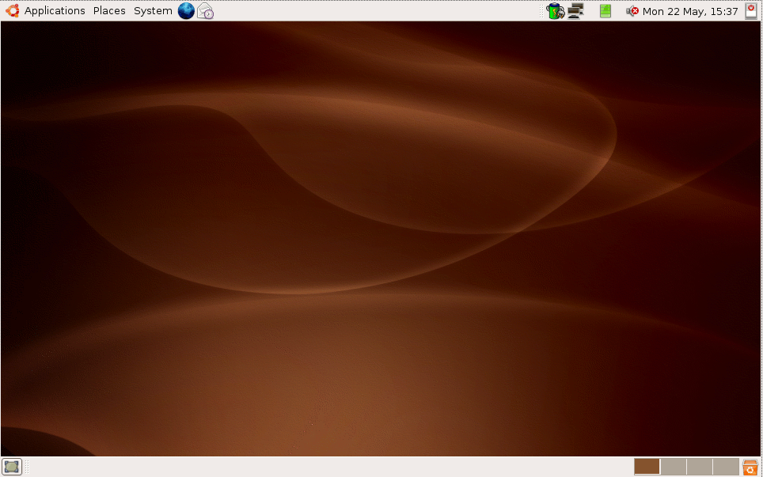
{kind=link}
Figure 3-1
The Ubuntu desktop is simple, uncluttered and...brown.
The desktop comprises three main areas:
- At the top of the screen is the panel. This bar contains the desktop menu options and application shortcut icons on the left side as well as the notification area on the right side. You use this bar to load applications and to see the status of certain activities on your system. The panel is always visible when you use your desktop.
- The large middle part of the screen is the desktop. This part of the screen is normally covered by the applications that you use, but you can also put icons and shortcuts on the desktop, too
- The bottom part of the screen is called the taskbar. This area displays a rectangle for each application open just like in Windows.
Device icons
Although there are no applications on the desktop, when you plug in USB
devices such as portable music players, key rings, or digital cameras a
device icon will appear on the desktop.
Starting Applications and Finding Things
Starting applications is simple. Just click on the Applications menu on the left side of the panel. Inside this menu are a number of submenus for different types of applications. Hover your mouse over each category, and then click the application that you want to load. As an example, click on Applications > Internet > Firefox Web Browser. After a few seconds the browser will pop up.When applications are loaded, the brown window border has three buttons on the right-hand side:
- Left button (thin white line): This is used to minimize the application and put it in the taskbar.
- Middle button (white square): This maximizes the window to take up the full desktop area.
- Right button (white cross): This button closes the application.
Changing Your Menu Layout
Although the main Applications, Places, and System menus are logical by default, you may want to further customize them by moving entries into different submenus, not displaying certain items, and other tweaks. All of this is easily done with the built in menu editor.To edit the menus right-click on a menu, and select Edit Menus. The menu editor now appears, as seen in Figure 3-2.
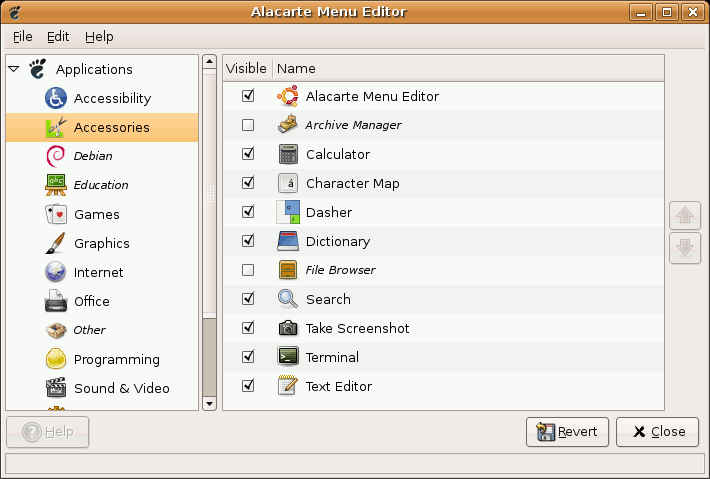
{kind=link}
Figure 3-2
The menu editor lets you easily change the Ubuntu menus.
The menu editor is fairly intuitive. To adjust which items are shown, click on a submenu, and deselect the items that you don't want to display. To add a new item, select the submenu the item should appear in, and then select File > New Entry. The box from Figure 3-3 will appear.
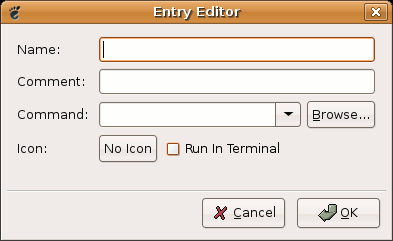
{kind=link}
Figure 3-3
Feel free to add your own menu items.
In the Name box enter the name of the application you are adding. In the Comment box enter a brief description of the application, and then add the command to run the application in the Command box. You can also use the "Browse" button to select the application to run. Finally, click "No Icon," and select an icon for the item. Click "OK" to finish adding it.
Find Your Files and Folders
When using your computer you often need to save and open files and folders, move them around, and perform other tasks. The Places menu contains a bunch of entries to access different parts of you computer and the network. These include:- Home Folder: Your home folder is used to store the files and work for each user who is logged in. This is the most important folder on the system, and you can think of it as the equivalent of My Documents in Windows-virtually everything you save lives here. Each user has a separate home folder.
- Desktop: The desktop folder is inside your home folder and contains files that visually appear on your desktop as icons. As such, if you drag a file onto your desktop, it will appear in the desktop folder and vice-versa.
- Computer: Clicking this item displays the different drives attached to your computer as floppy drives, CD/DVD drives, and USB keys or sticks. This is the equivalent of the My Computer icon in Windows.
- Network Servers: This option accesses servers that are available on your local network. This is the equivalent of the Network Neighborhood in Windows.
- Connect to Server: Click this to run a wizard to create a connection to a network server. You can use this to add an icon to the desktop that, when clicked, provides a list of remote files in the desktop file manager. You can then treat this window like any other file manager window and drag files back and forth. This is really useful for copying files to other computers.
- Search for Files: Use this to search for files on your computer.
- Recent Documents: Click this submenu to display the most recently used documents.
Configure Your System
The third and final menu, System, is used to configure the system and customize your desktop. Inside the menu are two submenus.- Preferences: This submenu contains items for customizing the look and feel of your desktop. Each of these settings only apply to the desktop of a user who is logged in. If you log in as another user, the settings change to that user's preferences.
- Administration: This submenu is used to configure systemwide settings such as networking, users, printing, and more. To use these menu items you need to know the system administrator password
Feel the Power
When you installed Ubuntu, you were asked for a username and password
for the system. This password not only provides access to your normal
user account but also accesses the all-powerful Administration
features. As such, when you access the menu options and are asked for
the password just enter your normal password, and you can use them.
This feature only applies to the first user that you created on the system. If you add another account, the user cannot access the Administration options unless you explicitly give him or her access.
This feature only applies to the first user that you created on the system. If you add another account, the user cannot access the Administration options unless you explicitly give him or her access.
Shortcut Icons
On the panel there are a number of shortcut icons next to the menus. These small icons are always visible and can be single-clicked to gain immediate access to your favorite applications. Ubuntu comes with some stock shortcuts on the panel, but you are welcome to add your own.Adding your own icon is as simple as finding the application you want to add in the menu and then dragging it to the panel. You can then right-click the new shortcut icon and select Move to move it to the right place.
Applets
One of the most useful features in Ubuntu is the ability to run small programs called applets on the panel. These small programs are useful for a variety of different tasks, and provide quick and easy access via the panel.To add an applet, right-click the panel and select Add to Panel. The window shown in Figure 3-4 pops up.
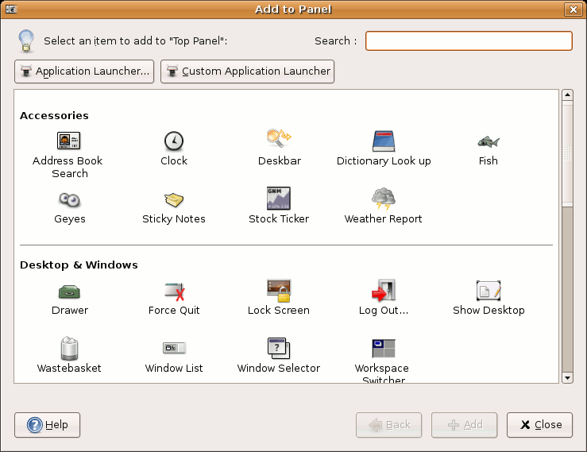
{kind=link}
Figure 3-4
Ubuntu comes bundled with a selection of applets.
Select one of the many applets, and click Add. When the applet appears on the panel, you can press the middle mouse button (or the left and right buttons together) to move it around.
The Notification Area
In the top right-hand part of the panel is the notification area and the clock. The notification area is similar to the Windows system tray in that it provides a series of small icons that indicate something specific. A good example of this is the battery monitor. This small icon displays how much power your laptop has left, and when you hover the mouse over it you can see how much time is left before your computer gives up the ghost.You can fiddle with the notification area items by right-clicking them to view a context menu. Some icons (such as the volume control) allow you to left-click on them to view them. Try clicking the little speaker icon and adjusting the slider.
Quick Tip
Right-click the volume icon, and select Open Volume Control to access
the mixer settings for your sound card. These settings configure the
speakers, microphone, line-in, and any other sound card input or
outputs.
The Clock
Next to the notification area is the clock. Click on the clock to view a calendar. Later, when you use Evolution, items that are added to your calendar appear in the clock applet too. Instead of opening up Evolution to find out when your dreaded dentist appointment is, just click on the clock to see it straight away.Quick Tip
Customize your click by right-clicking it and selecting Preferences.
The Taskbar
The taskbar sits at the bottom of the screen. This small bar is always visible and indicates which applications are currently open. In addition to this, the taskbar also sneaks in a few other handy little features.To the far left of the taskbar is the Hide/Show Desktop button. Clicking this button hides all of your open applications and shows the desktop. Clicking it again redisplays them. This button is useful when you need to quickly access something on your desktop.
Next to this button is the applications area, which shows each of the currently open applications. For each application, an entry is added, and you can right-click it to view a context menu. This menu is used to minimize, maximize, resize, close, and do other things to the application.
Quick Tip
You can switch between multiple applications in Ubuntu just like in
Windows by pressing Alt-Tab. When you press this key combination, a
small window appears that can be used to switch between active
applications.
To the right of the applications area are four small rectangles called the workspaces. Each of these rectangles represents another screen in which you can view an application. As an example, you may use your Web browser and e-mail client on the first desktop, talk to your friends on IRC and instant messenger on the second desktop, listen to your music in your audio player on the third desktop, and make notes in a text editor on the fourth one. You can then just click each virtual desktop to switch to it to access your different applications. Another useful tip is when moving applications between virtual desktops-if you have an application on the first desktop, just right-click the brown window or the taskbar entry, select Move to Another Workspace, and pick the relevant workspace number. The menu also has Move to Workspace Left and Move to Workspace Right options, too. This makes moving applications between your workspaces quite simple.
To the right of the workspaces is the wastebasket. Files that are dragged onto this icon are destined to be deleted. To fully delete these files, right-click the wastebasket and select Empty the Wastebasket.
Usability and the Ubuntu Desktop
Throughout the development
of the
Ubuntu desktop, great care and
attention has gone into usability. As an example, the four corners of
the screen are established as areas that are simple to access-you don't
need to carefully mouse over the area and can instead just throw your
mouse to the corner. This is why each corner has an important feature.
It makes accessing each feature that little bit easier.
Ubuntu is
filled with tiny usability improvements such as this that
help make it as intuitive as possible.
Shutting Your Computer Down and Logging Out
To lock your screen, shut your computer down, log out, hibernate or suspend, click System > Log Out. You then will see the dialog box displayed Figure 3-5.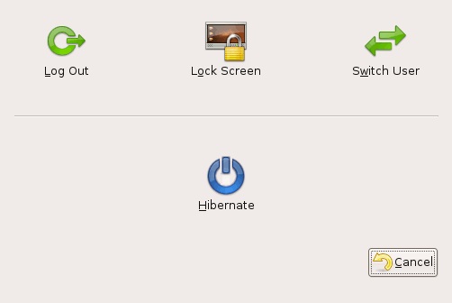
{kind=link}
Figure 3-5
Who knew that logging out had so many possibilities?
There are a number of options here available upon log out.
- Log Out: This option lets you log out of the current session and go back to the main login screen.
- Switch User: When you click this option, your user account remains logged in, but another user account can be used. When the second account logs out, Ubuntu reverts to the original one.
- Lock Screen: This option locks the screen. This is useful when you need to use the bathroom or grab some lunch. It will lock the computer and ask for your password to reenable the desktop.
- Hibernate: When you click this option, the current state of the system is saved to the hard disk and can be switched off. This is like the Sleep option, but slow and works on all computers.
- Restart: Click this to restart the computer.
- Shut Down: Click this to shut down your computer.
Using Your Applications
Now that you have gotten used to the desktop, let's explore some of the many applications included on your new system. By default, Ubuntu comes with a wide range of popular and established applications to listen to music, watch videos, create documents, browse the Web, manage your appointments, read your e-mail, create images and much more. These applications have been vetted by the developers to ensure they are the best of breed Linux applications available.Although Ubuntu includes a range of different software applications, it is likely you will want to install extra applications and explore other software that is available. Fortunately, the Ubuntu system is built on a powerful foundation which makes software installation as simple as pointing and clicking. Click Applications > Add Applications and a dialog box appears that you can use to install new applications. Just browse through the different categories and tick the applications to install. Click the Apply button and the application is downloaded and installed for you.
This tool provides a simple way of accessing a limited core set of popular applications, but there are actually more than 16000 packages available to your Ubuntu system. Software installation is discussed in detail in Chapter 4.
Another way of Running Applications
Although you will most typically start your applications by selecting
them from the Applications menu, you can also press Alt-F2 to bring up
a box to type in the name of an application and run it.
Browsing the Web with Firefox
Firefox is the default Ubuntu Web browser and provides you will a simple, safe and powerful browsing experience. Firefox has become one of the most successful Open Source projects in the world and continues to garner huge popularity. With more than 150 million downloads, and rapidly increasing browser share, Firefox has been an unparalleled success. It really is that cool.Fire up Firefox by clicking the blue earth shortcut icon on the panel or by selecting Applications > Internet > Firefox Web Browser. After a few seconds you are presented with the main Firefox window (See Figure 3-6).
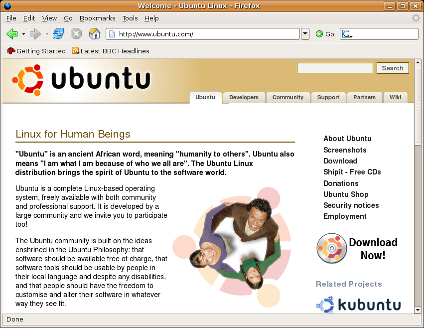
{kind=link}
Figure 3-6
The Firefox interface is sleek but extensible.
The Firefox window looks similar to most Web browsers and includes the staple back, forward, reload, and stop buttons, an address bar, and some menus. These familiar looking elements help with moving to Firefox, and if you have used Internet Explorer, Opera, Netscape, or Safari before, you are sure to pick it up in no time.
Navigating your way around the Internet is no different in Firefox than any other browser-just type the Web address into the address bar, and hit Enter. Firefox also has a few nice features that make it easy accessing your favorite sites. As an example, if you want to visit the Ubuntu Web site, you can just enter www.ubuntu.com (leaving off all that http:// nonsense). Alternatively, you can just type in "Ubuntu," and Firefox will go off to Google, enter "Ubuntu" as the search term and take you to the first result in the search. This feature is incredibly handy for popular sites that are likely to be at the top of the search results page.
Quick Tip
The search box next to the address bar can be used to do a search on
Google straight away. Just type in your search term, and press Enter.
You can also choose other places to search (such as Amazon, eBay, etc.)
by clicking the small icon and selecting a different option.
This search box can be used to search just about anything. To add more search engines, click the small icon and then select Add Engines.
This search box can be used to search just about anything. To add more search engines, click the small icon and then select Add Engines.
Tabbed Browsing
If you are anything like any of the authors behind this book, you look at a number of different Web sites each time you use the Internet. It is not uncommon to have your Webmail open as well as eBay, some discussion forums, news sites, blogs, and more. Before long, your desktop is littered with browser windows, and your taskbar is full to the brim.Firefox has a nimble solution to this problem in the form of tabbed browsing. If you are looking at your friend's Web site about raccoons and decide you want to check out your favorite sports player's Web site, just click File > New Tab or press Ctrl-T and-ta-da!-a new tab is unveiled in your browser window. You can now load another page inside this tab.
The tabbed browsing fun doesn't stop though-oh no! When you are reading the Web and you see a link that you are interested in viewing, right-click the link, and select Open Link in New Tab. The page will load in the new tab, and you can continue reading the article and view the link afterwards.
Bookmarking Your Favorite Sites
To bookmark the page you are viewing, click Bookmarks > Bookmark This Page. In the dialog box that pops up, use the combo box to select the folder to store the bookmark in. If you want to create a new folder, click the small arrow button on the right side of the box, and the box will expand. To create a main folder, select the bookmarks folder, and click New Folder. You can also create subfolders by clicking an existing folder and again clicking New Folder. When you have finished selecting or creating a new folder, click Add to add the bookmark.Save Time with Live Bookmarks
Firefox also includes a special feature called live bookmarks that automatically grabs content from a Web site without you needing to visit it. As an example, go to http://fridge.ubuntu.com/ (a popular Ubuntu news site), and you will see a small orange icon on the right side of the address bar. Click this orange square, and a dialog box pops up to select where to store your bookmark. Use the default option (the toolbar folder), and click Add. A new toolbar button is added, and when you click on it a list of the items from the Web site are displayed. Each time you start Firefox, it will quietly go away and update this list so that you don't need to visit the site yourself.
If You Liked the Fridge
You may also like Planet Ubuntu at http://planet.ubuntu.com/.
This site
collects together the personal Weblogs of a number of different Ubuntu
developers. Planet Ubuntu gives a unique insight into what the
developers are working on.
Bolt It On, Make It Cool
Although Firefox is already a powerful and flexible Web browser, it can be extended even further using special plug-in extensions. These extensions not only cover typical browsing needs such as the Macromedia Flash plug-in, it also covers other more specialized extras that extend the browser itself.To install normal Web plug-ins, just visit a site that requires the plug-in. A yellow bar will appear indicating that you are missing a plug-in. Click Install Missing Plug-ins button to grab the required plug-in. By default, Ubuntu does not come with the Macromedia Flash plug-in, so you will need to install this separately.
To extend the browser itself with additional features, go to https://addons.mozilla.org/ ,and browse for an extension that you are interested in. When you find something you would like to install, click the Install link. A dialog box will pop up asking you to confirm the installation. Click Install Now. Your new extension will now download and install automatically. Typically this requires a restart of Firefox, and then your extension is available.
Be Careful Where You Download
When browsing for extensions, it is recommended you only download
extensions from http://addons.mozilla.org.
If you do need to install an
extension from another site, make sure it is a site you trust.
Otherwise the extension may contain unsafe software, viruses, or
spyware.
Creating Documents with OpenOffice.org
Included with Ubuntu is a full office suite called OpenOffice.org. This comprehensive collection of applications includes a word processor, spreadsheet, presentations, database, drawing editor, and math editor. The suite provides an extensive range of functionality, reads and writes Microsoft Office file formats, and can also export documents as Web pages, PDF files, and Macromedia Flash animations.Let's give OpenOffice.org a whirl by creating a letter with it. Start OpenOffice.org Writer by selecting it from the Applications > Office menu. When it has loaded you will be presented with the interface shown in Figure 3-7.
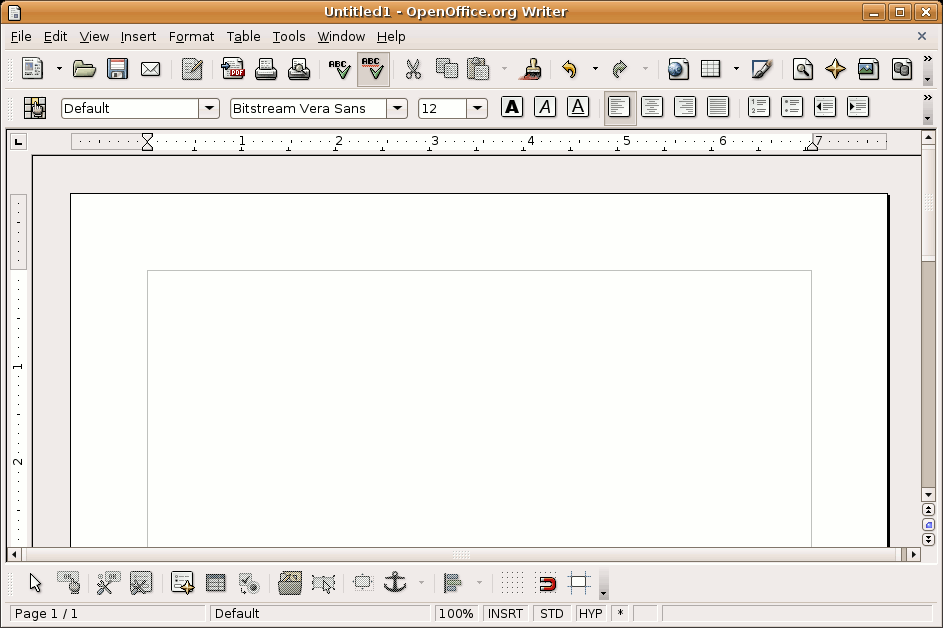
{kind=link}
Figure 3-7
OpenOffice.org looks similar to Microsoft Office and is therefore quite simple to migrate to.
If you have used a word processor before, much of the common interface elements such as the font type and size, bold, italic, underline, and alignment buttons look and behave the same. The OpenOffice.org developers have designed the suite to be easy to migrate to if you have used something such as Microsoft Office before. After a few hours playing with OpenOffice.org you are sure to know how to do what you need.
Start your letter by first choosing a nice font. In the font combo box you should see Nimbus Roman selected by default. Click the box and instead choose the lovely Bitstream Vera Sans font. Also change the font size by clicking the combo box to the right of the font box and select 10 as the size. With the cursor currently on the left side of the page, add your home address to the letter.
Now press Enter to leave a blank line under the address and click the Align Right toolbar button (the icon looks like some lines aligned to the right). If you are unsure of what each button does, hover your mouse over it, and a tool tip pops up. Now add the address of the recipient.
Press enter again to leave a blank line, and type the main body of the letter. Feel free to use the bold, italic and underline buttons to add emphasis to your words. You can also use other toolbar buttons to add items such as bullet points, numbered lists and change the color of the font. If you want to add features such as graphics, tables, special characters and frames, click the Insert menu and select the relevant item. Each item that is added to the page can be customized by right-clicking it and using the items in the context menu.
With your letter complete you can now save it by selecting File > Save, clicking the floppy disk toolbar icon or by pressing Ctrl-S. The default file format used by OpenOffice.org is the OpenDocument Format. This open standard file format is an official open standard and is used across the world. The file format is slightly different for the different types of application (.odt for word processor files, .ods for spreadsheets, etc.), but each format provides an open standard free from vendor lock-in. You can also save in a variety of other formats, including Microsoft Office.
Vendor Lock-In?
In the proprietary software world, it is common for each application to
have their own closed file format that only the vendor knows how to
implement. When a person uses the software to create all their
documents, the closed format means that only that specific tool can
read and write the format. As long as you want to access your
documents, you need that tool. This is known as vendor lock-in.
To combat this problem, the OpenOffice.org suite (and the vast majority of other Open Source applications) uses an open file format that is publicly documented. This means that other applications can implement the OpenDocument file format, and you can be safe in the knowledge that your documents will always be available and you are not locked into any specific tool.
Another useful feature wedged into OpenOffice.org is the capability to
save your documents in the Adobe PDF format. PDF files have been
increasingly used in the last few years and are useful for sending
people documents that they should not change (such as invoices). PDF
files provide a high quality copy of the document and are well
supported across all OS. This makes PDFs ideal for creating catalogs,
leaflets, and flyers. To save as a PDF file, click the PDF button on
the main toolbar (next to the printer icon). Click the button, enter a
file name and you are done. Simple. To combat this problem, the OpenOffice.org suite (and the vast majority of other Open Source applications) uses an open file format that is publicly documented. This means that other applications can implement the OpenDocument file format, and you can be safe in the knowledge that your documents will always be available and you are not locked into any specific tool.
Managing Your E-mail and Calendars with Evolution
Evolution has been modeled around the all-in-one personal information management tool. Within Evolution you can read your e-mail, manage your schedule, store contact details, organize to-do lists, and more in a single place. This makes evolution particularly useful for business people who want easy access to this information.Setting Up Your E-Mail Account
To use evolution to read your e-mail you need to find out the following settings for connecting to your e-mail server (you can find these details from your ISP or system administrator):- Your type of e-mail server (such as POP or IMAP)
- Your mail server name (such as mail.chin.com)
- Your mail account's username and password
- Authentication type (typically 'password')
- Your outgoing mail server type (typically SMTP)
- Your outgoing mail server name
Evolution and Webmail
You can't use Evolution to read Webmail such as Gmail, Yahoo! Mail, or
Hotmail unless you configure your Webmail to output as POP and use SMTP
to send e-mail. Consult your Webmail provider for more details.
Load Evolution by clicking the envelope and clock shortcut icon from the panel (hover your mouse over the shortcuts to see what they are) or by clicking Applications > Internet > Evolution Mail. When the application loads you are taken through a wizard to set up your e-mail server (as shown in Figure 3-8).
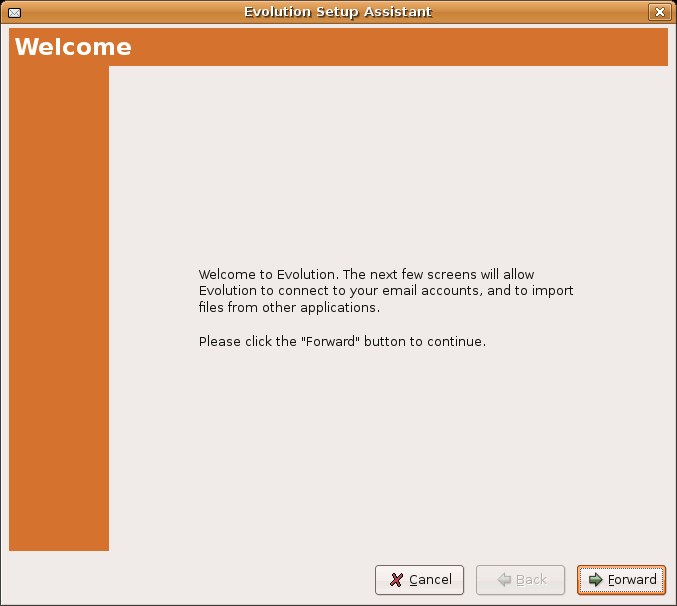
{kind=link}
Figure 3-8
Setting up Evolution is simple so long as you know the details for your mail server.
Click Forward to continue the setup, and you will then be asked for your identity. Fill in your e-mail address in the E-mail Address box, and add the optional information if you want to. The additional details are not essential for using Evolution. Click Forward to continue.
You are next asked to choose what kind of e-mail server you have from the drop-down box. When you make your selection, some additional settings are displayed. Fill in the server name and the username. You may need to adjust the Security and Authentication Type settings, but for most accounts the default settings should be fine. Click Forward to continue.
The next page configures some options for receiving your e-mail. None of these options are essential, although you may want to check the first box to automatically check for new mail. Click Forward to continue. The next screen configures sending e-mail. In the combo box select the Server Type (typically SMTP) and add the server name to the Server box. Click Forward to continue.
In the next screen enter a name to describe the account. The default entry (your e-mail address) is fine, but you may want to add something more meaningful such as "Work E-mail" or "Home E-mail." When you have added this, click Forward to continue. Finally, select your location from the map. If you click on your area of the world, the map will zoom in. Once you have done this click Apply to complete the process and close the wizard.
With the wizard completed, the main Evolution interface will appear as shown in Figure 3-9.
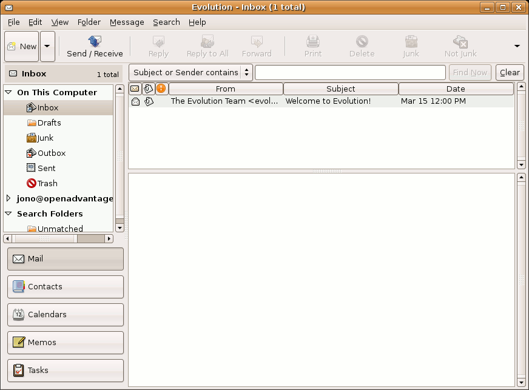
{kind=link}
Figure 3-9
Those of you who have used Microsoft Outlook should find the interface very similar.
On the left sidebar you can see a number of buttons to access the mail, contacts, calendars, memos, and tasks components in Evolution. When you click each button the interface adjusts to show you the relevant information about that component.
Working with Your E-Mail
Inside the e-mail component you can see the e-mail folders in the left panel and the list of messages in the top pane. When you click on a message, it is displayed in the bottom pane where you can read it. With your new account set up you will first want to go and grab the e-mail from your mail server. Click Send/Receive, and the mail is retrieved from your server and any unsent mail is sent.Problems?
If you cannot connect to your mail server, there may be an error in
your account configuration. To edit your account settings again, click
Edit > Preferences, select the account from the list, and click
Edit.
With you messages loaded, new e-mails are shown in bold in the top pane. Move through the different e-mails using the up and down arrow keys, and each message will be displayed. You can reply to a message by clicking the Reply or Reply To All toolbar buttons. New e-mails can be sent by clicking the New toolbar button. By default, new e-mails and replies are sent automatically when you click the Send button in the compost window. This way you don't need to click the Send/Receive button to deliver them.
Managing Your Calendar
Inside calendar mode, Evolution provides a convenient way of managing your schedule, adding new events, and viewing your calendar in different ways. When you click the Calendar button to enable this mode, you can see the timetable for today as well as the month view. The month view shows a couple of months in which the bold dates have events.There are two types of event you can add to your calendar.
- Meetings: These are events with a specific group of people.
- Appointments: These are general events.
Multiple Calendars
Evolution supports multiple calendars. This is useful if you want different calendars for different types of events such as personal and work related activities. To create a new calendar, right-click the calendar list in the left sidebar and select New Calendar.To add a new meeting, again find the date, right-click the Today view, and select New Meeting. Inside the dialog box that pops up, you need to add the participants who are attending the meeting. You can add participants in two ways: Use the Add button if they are not in your address book, or use the Attendees button if they are in your address book.
When you click Attendees,, a new dialog pops up with a list of attendees down the left and you can use the Add and Remove buttons to select a contact and add them to the different categories of Chair Persons, Required Participants, Optional Participants, and Resources. Now, you probably don't have any contacts in there as you are just starting to use Evolution, so use the main Contacts button on the left side of the main Evolution window to add some.
You can view your calendar in lots of different ways by clicking the different toolbar buttons such as Week, Month, and List. Have a play with them and see which ones are most useful to you.
Quick Tip
Remember, your appointments can be accessed without opening Evolution
by clicking on the clock in the panel.
Create Graphics with the GIMP
The GNU Image Manipulation Package, affectionately known as the GIMP to its friends, is a powerful graphics package. The GIMP provides a comprehensive range of functionality for creating different types of graphics. It includes tools for selections, drawing, creating paths, masks, filters, effects, and more. It also includes a range of templates for different types of media such as Web banners, different paper sizes, video frames, CD covers, floppy disk labels, and even toilet paper. Yes, toilet paper. You can load the GIMP by clicking Applications > Graphics > GIMP Image Editor.Unlike Adobe Photoshop, the GIMP does not place all of its windows inside a single large window, and instead has a number of separate child windows. This can be a little confusing at first for new users. To get you started, let us run through a simple session in the GIMP.
An Example
Start the GIMP by clicking Applications > Graphics > GIMP Image Editor.When the gimp loads you will see a collection of different windows as shown in Figure 3-10.
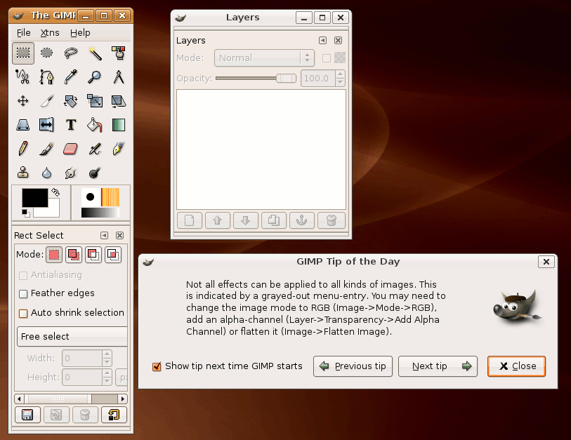
{kind=link}
Figure 3-10
The GIMP does not put everything in one window like Adobe Photoshop.
Close the Tip of the Day window, and you are left with two other windows. The one on the left in the above screenshot is the main tool palette. This window provides you with a range of different tools that can be used to create your images. The window on the right provides details of layers, brushes, and other information. The GIMP provides a huge range of different windows that are used for different things and this is just one of them.
To create a new image, click File > New. The window shown in Figure 3-11 will appear.
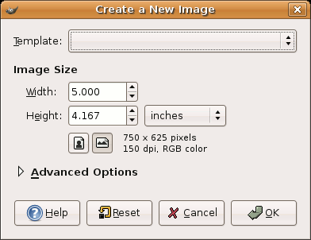
{kind=link}
Figure 3-11
There are lots of templates available, including one for toilet paper!
The easiest way to get started is to select one of the many templates. Click the Template combo box and select 640x480. If you click the Advanced Options expander you can also select the type of color used in the image with the Colorspace box and how the background is filled. The Fill combo box is useful for either selecting a fill color or having a transparent background.
Click OK, and you will see your new image (Figure 3-12).
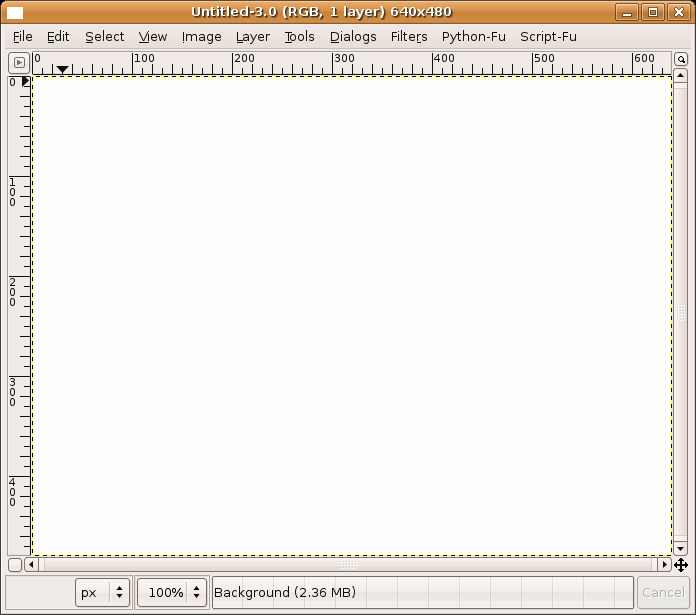
{kind=link}
Figure 3-12
Use the right mouse button on the image to access lots of GIMP options and features.
To work on your image, use the tool palette to select which tool you want to use on the new image window. Each time you click on a tool in the palette, you see options for the tool appear at the bottom of the palette window.
When you click the T button in the palette, it selects the text tool. At the bottom of the palette you see the different options. Click the Font button, and select the Sans Bold font. Now click the up arrow on the Size box, and select the size as 45. Move your mouse over to the empty image, and you will see the mouse pointer changes to a text carat. Click in the image, and a box pops up in which you can enter the text to add to the image. Type in "Ubuntu." With the text entry still open, click the up arrow on the Size box so the text fills most of the window. As you can see, you can adjust the text while it is in the image. When you are happy with the formatting, click Close button on the text entry box. Your image should look a little like Figure 3-13.
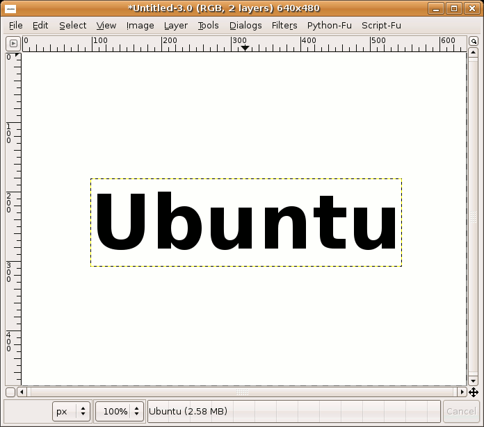
{kind=link}
Figure 3-13
Ubuntu comes with a range of attractive fonts for use in your images.
Now click the button in the palette with four arrows on it. You can use this to move the text around. Click the black text, and move the mouse.
Let's now add an effect filter. The GIMP comes with a range of different filters built in. You can access these by right-clicking the image and selecting the Filters submenu. The GIMP also allows you to create scripts that combine filters together to create interesting combinations. Again, a number of these scripts are included, and you can access them by right-clicking the image and selecting the Python-Fu and Script-Fu submenus.
For our image, right-click the image and select Filters > Blur > Gaussian Blur. In the Horizontal and Vertical boxes select 20 as the value. Click OK to apply the effect. After a few seconds the blur is applied to your text. Anything in the GIMP can be undone by clicking Edit > Undo or typing Ctrl-Z. Your image should now look like Figure 3-14.
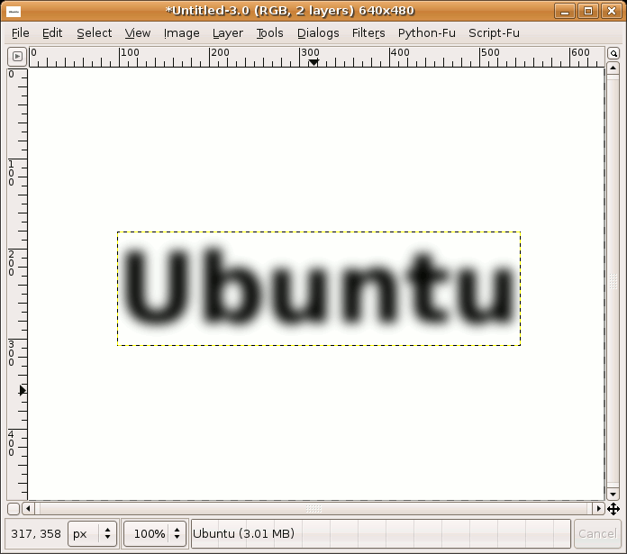
{kind=link}
Figure 3-14
There are lots of filters and effects bundled with the GIMP on your computer.
Now we are going to create another layer and put some text over our blurred text to create an interesting effect. In your image window, click Dialogues > Layers. The layers window now appears (Figure 3-15).
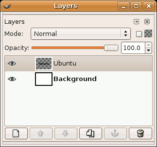
{kind=link}
Figure 3-15
Layers are essential when creating complex images with lots of parts.
Layers are like clear plastic sheets that can be stacked on top of each other. They allow you to create some imagery on one layer and then create another layer on top with some other imagery. When combined, layers can create complex looking images that are easily editable by only editing the layer you want. Currently, our blurred text is on a layer. Add a new layer by clicking the paper icon in the layers dialog box. Another window appears to configure the layer. The defaults are fine (a transparent layer the size of your image), so click OK.
Now double-click the black color chip in the palette window and select a light color. You can do this by moving the mouse in the color range and then clicking OK when you find a color you are happy with. Now click the text button from the palette and again add the Ubuntu text. When the text is added it will be the same size as before. Now use the move tool and position it over the blurred text. Now you have the word "Ubuntu" with a healthy glow as shown in Figure 3-16!
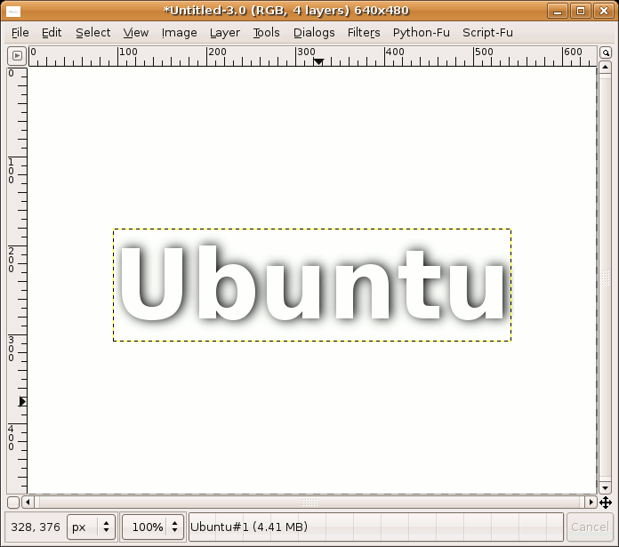
{kind=link}
Figure 3-16
Combining steps as we have done can result in interesting effects such as this.
The final step is to crop the image to remove the unused space in the image. Click Tools > Transform Tools > Crop > Resize and use the mouse to draw around the Ubuntu word. You can use the black pins on the outside of the selection to move it more precisely. Click Crop, and the image now cropped. To save your work, click File > Save, and enter a filename. You can use the Select File Type expander to select from one of the many different file formats.
Communicate with Gaim
With the Internet steamrolling its way across the world, the ubiquitous global network has become a part of everyday life and something that you can reasonably assume people have access to. This has in turn spawned a range of Web-based services and interestingly, a variety of methods of communicating with each other.Included with Ubuntu is Gaim, a cornucopia of different methods of instantly messaging your friends from within a single program. Instead of having to install a separate client application to talk to your friends on MSN, AIM, ICQ, and Jabber, Gaim can do it all in one place.
Gaim is available by clicking Applications > Internet > Gaim Instant Messenger.
Setting Up Your Accounts
When you start Gaim, the first step is to create an account for each different type of network you want to use. Click the Accounts button the main screen and the Accounts dialog box will appear. Click the Add button to add a new account and the Add Account box appears (Figure 3-17).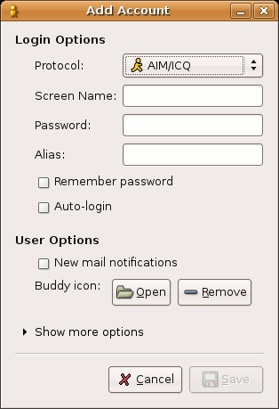
{kind=link}
Figure 3-17
Many different types of account (MSN, AIM, Jabber, ICQ, IRC, etc.) are supported in Gaim.
This window adjusts which text boxes are available depending on the Protocol chosen. The different networks available are listed as options in the Protocol box. To create an account you will need to have an existing account on one of the networks. Gaim allows you to have different accounts on different networks running together-you just create a new account for each protocol.
When you have selected a Protocol, fill in the remaining boxes. The Screen Name box needs to contain your registered username (or e-mail address for MSN), and the password box needs the respective password to be added. You can also use the Alias box to add an interesting name that is displayed when other people see you online. If you want to configure any other options, click the Show More Options expander.
Using Instant Messaging
With your account(s) set up, click Sign On to log on. When you are logged in, your friends list (known as buddies in Gaim) are displayed (Figure 3-18).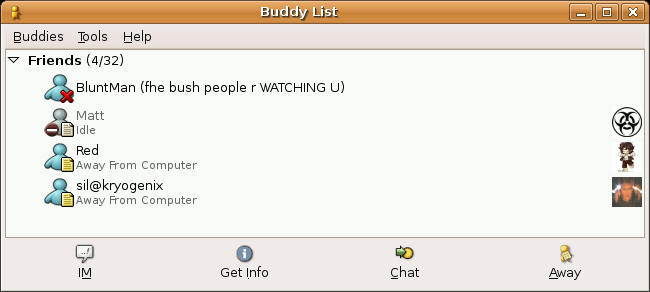
{kind=link}
Figure 3-18
Gaim provides quick and easy access to your buddies-just click them to talk!
You can use the Buddies menu option to add more buddies to the list with the Add Buddy option. To speak to a buddy, double-click the name, and a window will pop up.
Using IRC
Included in Gaim is support for IRC channels, and it has a very nice
interface for IRC discussion. To use the IRC feature, first create an
account. Next, sign on, and then click Buddies > Add Chat and
enter
the IRC channel name in the Channel box. Finally, double-click on the
channel name to go to it.
Cutting-Edge Voice Over IP with Ekiga
Included with Ubuntu is a simple to use yet powerful Internet phone called Ekiga. Formally known as GNOME Meeting, Ekiga lets you make voice and video calls with other people across the Internet. In addition to the traditional Microsoft Netmeeting support, Ekiga now supports SIP, a protocol that is commonly used to allow people with software phones such as Ekiga to communicate with people using hardware Voice Over IP phones. SIP is an industry standard that many hardware phones, software phones, services, and providers support.If you choose to use SIP, calls from one phone to another across the Internet are free. In addition to this, many providers allow you to make calls to normal land line phones for very little. Ekiga offers you the possibility to call anyone in the world directly from your computer with little fuss.
You can access Ekiga by clicking Applications > Internet > Ekiga Softphone.
Setting Up
When you first start Ekiga, you are guided through a setup wizard (Figure 3-19).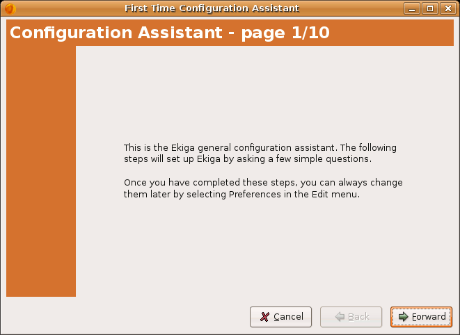
{kind=link}
Figure 3-19
Setting up Ekiga is simple wit the setup wizard.
Click Forward to get started, and you see the next page (Figure 3-20).
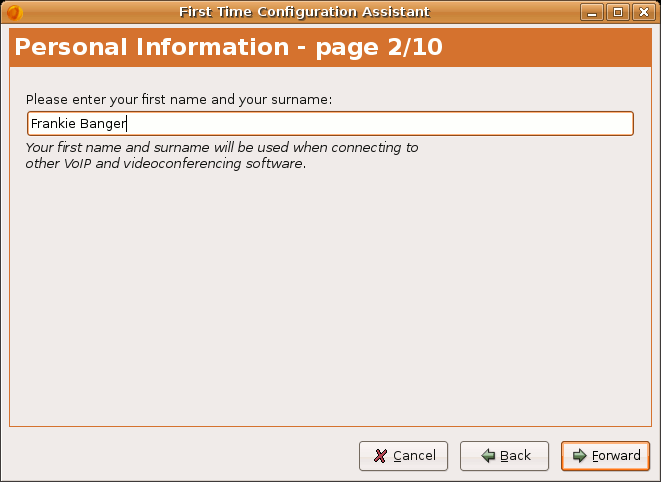
{kind=link}
Figure 3-20
Adding your name makes it easier for people to find you online.
In this box, enter your first and second name (such as Susan Curtis). Click Forward to continue.
You can now configure an Ekiga.net account (Figure 3-21).

Figure 3-21
Ekiga.net offer a free SIP service.
At Ekiga.net, a free SIP service is offered. If you don't have an account (which is likely if this is the first time you have used Ekiga), click the Get an Ekiga.net SIP account button. Firefox is then loaded, and you can use the online form to sign up. If you don't want an account, just select the checkbox in the wizard saying you don't want to sign up. If you do sign up, add your username and password, and then click Forward.
Now you can configure your connection speed (Figure 3-22).
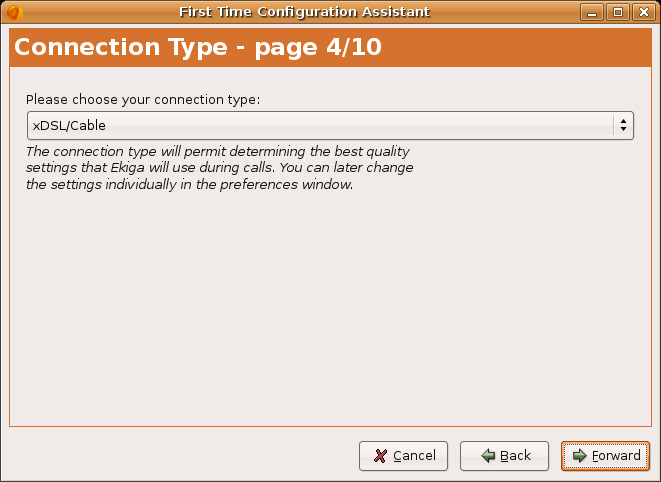
{kind=link}
Figure 3-22
Be honest here-selecting a faster speed won't make it any quicker!
Just select the type of connection you have, and then click Forward.
Traditionally, one of the problems in the past with Internet phones has been that you need to modify your firewall (if you are running one) to get it working. This typically involved configuring how your Network Address Translation (NAT) settings. Luckily, Ekiga can detect the type of NAT settings that you need (Figure 3-23).

Figure 3-23
Traditionally, setting up NAT with Internet phones was a pain-until now.
After a few seconds of detecting your type of NAT it will propose an option. Click Yes to continue, and then click Forward.
Next you configure your audio (Figure 3-24).
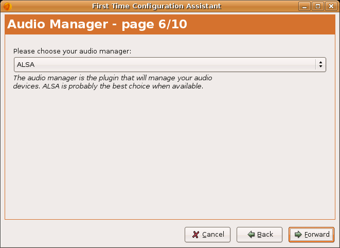
{kind=link}
Figure 3-24
Ubuntu supports different types of audio frameworks, but the Advanced Linux Sound Architecture (ALSA) is the most common.
Select ALSA from the box and click Forward to continue.
You can now select the audio input and output devices (Figure 3-25).
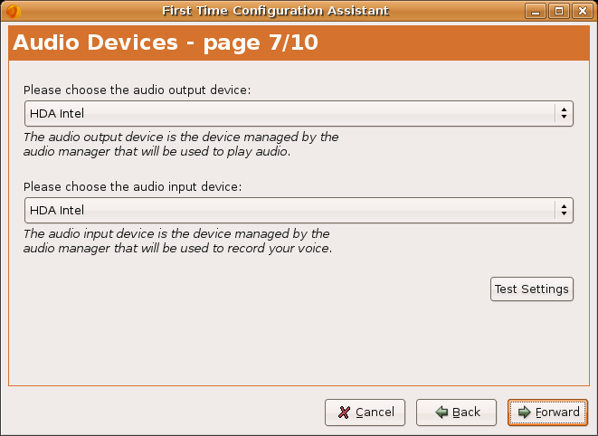
{kind=link}
Figure 3-25
Make sure you get these settings right, or you won't hear anything.
These settings are used to ensure that you can hear and record the audio. To test your settings, click Test Settings. If all is fine, click Forward to continue.
Next select the type of video manager (Figure 3-26).
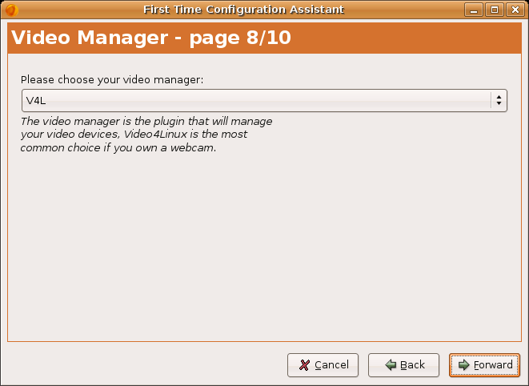
{kind=link}
Figure 3-26
Ubuntu supports different types of video, but V4L is the most common.
The video ensures that video is displayed correctly on your screen. Select V4L from the list, and click Forward to continue.
The final setting to configure is your Web camera (Figure 3-27).
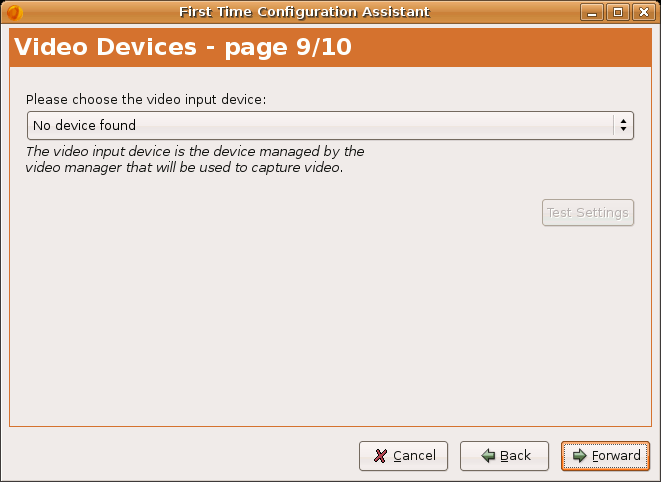
{kind=link}
Figure 3-27
Remember to look your best online!
Ensure your camera is plugged in, and select a device from the combo box. If you can't see any options, you will need to configure your camera driver first. When you have selected a device, click Test Settings to verify that it works.
Finally, a summary of your options are displayed (Figure 3-28).
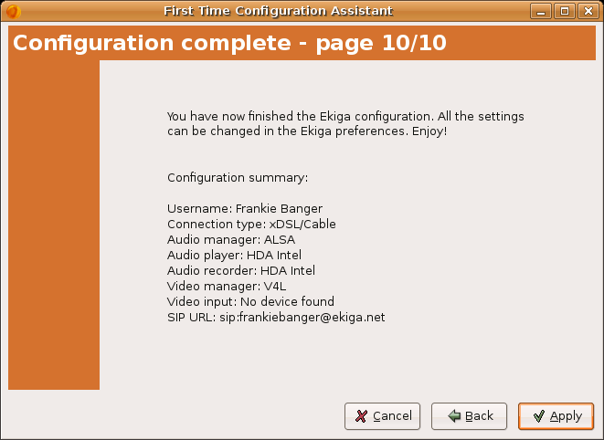
{kind=link}
Figure 3-28
Now you are all set to make calls.
Ekiga is now configured.
Making a Call
With the configuration wizard complete, the main Ekiga window is displayed (Figure 3-29).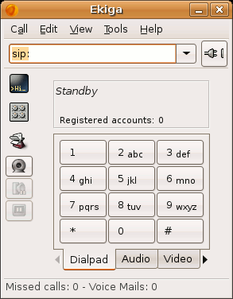
{kind=link}
Figure 3-29
The Ekiga window is simple and sleek
You are now ready to make a call. To do this, simply enter the phone number or SIP address of the person you want to call, and click the Connect button next to the address bar. The call is then connected, and you can begin talking.
On the left side of the window are a number of icons that do different things.
- Text chat: When in a chat, click this icon to open the text chat window. You can use this to send text messages to the user.
- View mode: Click this icon to select which view mode Ekiga is in. You typically need this when in a video chat with someone.
- Address book: Click this icon to access the address book. Here you can save your contacts and you can also access the ekiga.net online white pages to see who else is online.
- View Webcam: This icon switches on the Webcam so that you can see who are speaking to.
Exploring the Ubuntu Landscape
Unlike many other OS, Ubuntu includes a comprehensive suite of applications right inside the system. This range of tools has been selected to allow you to d install Ubuntu and get your work done, communicate with other people, read and create documents, watch and/or listen to media, and more. Unfortunately, due to space restrictions this book can only skim over the surface of available applications.To help remedy this a bit, here is a quick summary of many of the applications included on the Applications menu in Ubuntu, including how to find the applications and a brief description:
Text Editor
Applications > Accessories > Text EditorThis simple yet powerful text editor is ideal for editing documents, making quick notes, and for programming. Included is a range of plug-ins for spell checking, statistics, file listings, and more.
Calculator
Applications > Accessories > CalculatorFor those times when you need to figure out a percentage or calculate if you are getting a raw deal from your employer, the calculator is there. It provides a range of functionality for simple and scientific calculations.
Terminal
Applications > Accessories > TerminalUnderpinning the desktop is an incredibly powerful command line core. This application puts a window around a command line interface and allows you configure transparency, fonts, behavior, and more. Essential for the command line junkies among you.
Dictionary
Applications > Accessories > DictionaryThe dictionary provides a great way to find out how to spell a word or discover what the meaning is. The dictionary uses the latest definitions from an online dictionary. For those of you who spent hours as a child looking up rude words in the dictionary, hours of fun are guaranteed.
Gnometris
Applications > Games > GnometrisIf you have too much time on your hands, a sure fire way of wasting it is to play this version of Tetris. If you decide that single player Tetris is not enough, go and download gtetrinet.
Nibbles
Applications > Games > NibblesThe classic worm game comes to Ubuntu. Another sure fire way of whiling away an afternoon.
Mahjongg
Applications > Games > MahjonggFor those of you who actually understand the rules of Mahjongg, this application provides a great implementation of the game.
FreeCell Patience
Applications > Games > FreeCell PatienceThere is a body of thinking that suggests that FreeCell may be responsible for untold hours of lost productivity. If you are impatient about playing Patience, select FreeCell Patience.
Internet Relay Chat
Applications > Internet > XChat-GNOME IRC ChatInternet Relay Chat (IRC) provides a way of talking to other people on the Internet by typing text into discussion channels. There are literally thousands of users online and thousands of channels available. IRC has proven to be a truly useful tool for getting help about Ubuntu and Linux, too. Be sure to log onto the Freenode network, and visit #ubuntu.
Terminal Server Client
Applications > Internet > Terminal Server ClientIf you need to connect to a remote terminal server, this is how you do it.
Movie Player
Applications > Sound & Video > Movie PlayerAlthough listed as a movie player, this application actually plays a range of different types of media including both video and audio.
Sound Recorder
Applications > Sound & Video > Sound RecorderIf you need to record something, such as your voice for a podcast or audio message, you can use this simple tool.
Audio CD Creator
Applications > Sound & Video > Serpentine Audio-CD CreatorIf you have a collection of sound files that you would like to convert to an audio CD, this is the tool for you. This is particularly handy if you have a long drive and want to burn a CD with some music or podcasts to listen to.
CD Ripper
Applications > Sound & Video > Sound Juicer CD ExtractorThis application is the reverse of the previous one, allowing you to convert songs on a CD into songs that live on your hard disk or portable music player.
System Administrator Terminal
Applications > System Tools > Root TerminalIf you want to run a number of commands as the system administrator, load this terminal, and you won't need to constantly use sudo.
System Monitor
System > Administration > System MonitorTo get an idea of the current performance of your computer, click on this tool. The System Monitor lets you know which applications are running, how much memory/processing power they are using, and it also allows you to kill or restart processes that are hogging the resources.
Other Applications to Try
There are literally thousands of available packages that can be installed on your Ubuntu computer. These packages span over a range of different areas, and this section covers some of the popular ones. Coverage of software installation appears in Chapter 4. Try these useful applications:Blender
Package to install: blenderBlender (See Figure 3-30) is an incredibly powerful 3D modeling, animation, rendering, and production studio. Blender amasses an impressive range of functionality for creating photorealistic scenes, animations, and real-time virtual walkthroughs. Blender is also fully scriptable in Python.
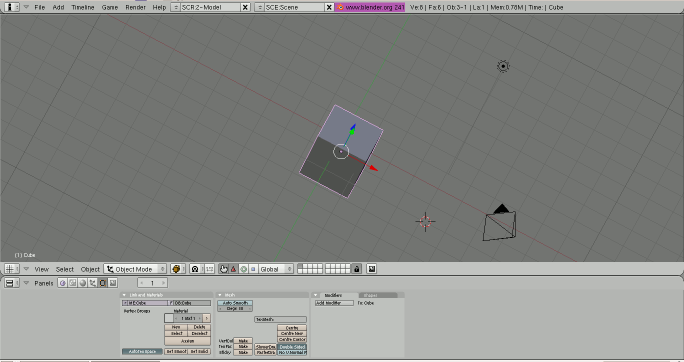
{kind=link}
Figure 3-30
Blender
Inkscape
Package to install: inkscapeInkscape (See Figure 3-31) is a drawing package for creating Scalable Vector Graphics (SVG). Ever since the SVG format was introduced, it has taken the design world by storm and allows the creation of graphics that can scale to any size. Inkscape is a hugely flexible tool for creating such graphics, and a huge range of icons and artwork in Open Source projects are made in Inkscape.
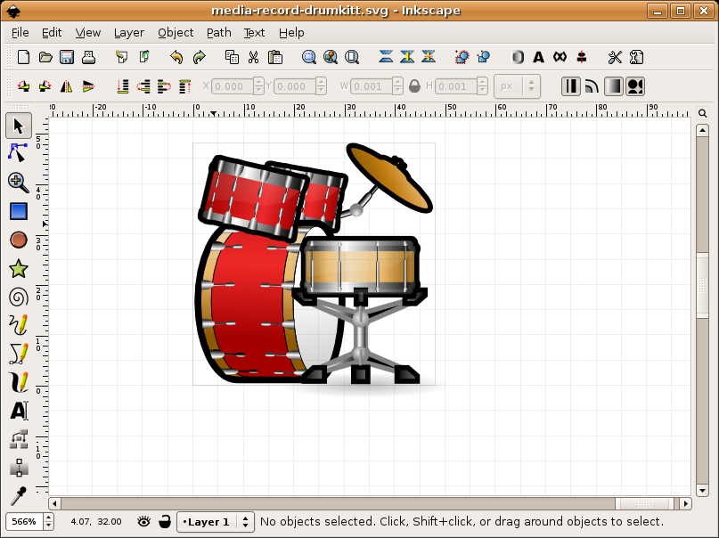
{kind=link}
Figure 3-31
Inkscape
Beagle
Package to install: beagleBeagle (See Figure 3-32) is a search system that indexes virtually everything. When you install Beagle, you can search for "campfire," and it would return documents, images, Web pages, blog entries, instant messaging conversations, and more that contain that term. Beagle is still very much in development but is an incredibly useful tool.
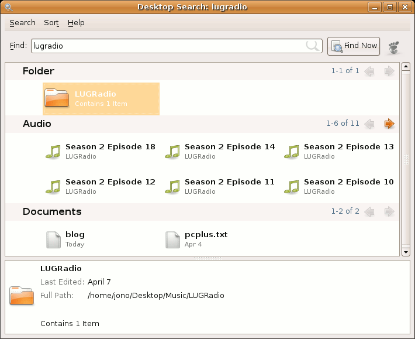
{kind=link}
Figure 3-32
Beagle
F-Spot
Package to install: f-spotF-Spot (See Figure 3-33) is a complete photo management application. With it you can import photos from your digital camera or USB stick, tag them with familiar terms, do touch ups, and edit them in different ways. In addition to this, F-Spot can upload photos easily to Flickr and other online photo galleries. F-Spot is particularly useful for those of you who are trigger happy with a digital camera.
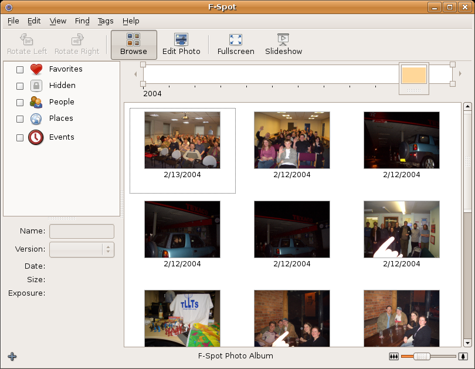
{kind=link}
Figure 3-33
F-Spot
NVU
Package to install: nvuNVU (See Figure 3-34) is a complete What You See Is What You Get (WYSIWYG) Web page editor. NVU is ideal if you want to create Web pages visually without having to learn HTML and CSS code. NVU lets you create your pages and upload them easily. This guide was created in NVU.
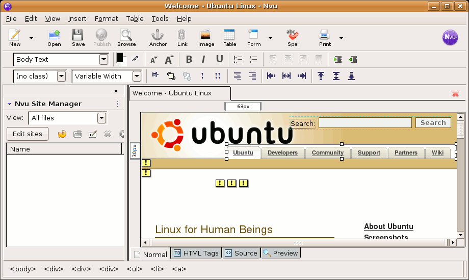
{kind=link}
Figure 3-34
NVU
Bluefish
Package to install: bluefishFor those of you who want to create Web pages but prefer to write code, Bluefish (See Figure 3-35) is an excellent Web editor. Bluefish is a lightweight but feature-rich editor with support for a range of languages as well as HTML and CSS.
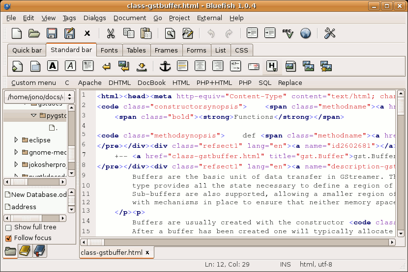
{kind=link}
Figure 3-35
Bluefish
Eclipse
Package to install: eclipseIf you are a developer and want an entire development environment, Eclipse (See Figure 3-36) is a good choice. Eclipse includes support for a huge range of languages by using plug-ins. This includes support for C, C++, Java, Python, Perl, Ruby, PHP, and more. Eclipse also has built in support for source control (CVS or Subversion), debugging, and automatically handles its own (and the plug-in's) software updates.
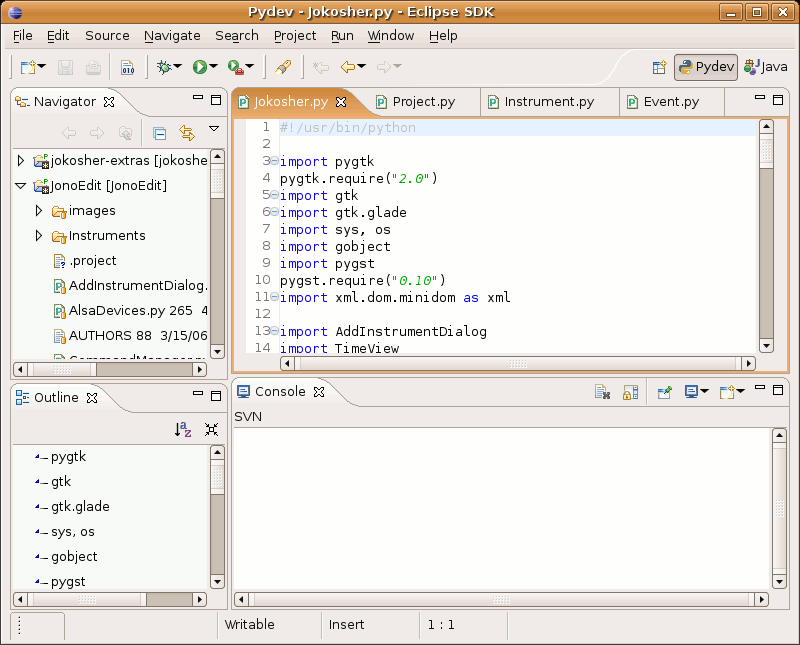
{kind=link}
Figure 3-36
Eclipse
The Ubuntu File Chooser and Bookmarks
One area in which the GNOME developers have worked hard is to create an intuitive and useful file chooser that is accessed in applications with File > Open. You may be wondering why they have spent so much time on such a small and seemingly insignificant part of the desktop. In reality however, finding files is one of the most frustrating aspects of using computers and often involves digging through folder after folder to find what you need. Luckily, the GNOME file chooser helps cut down much of this file hunting significantly.The file chooser is shown in Figure 3-37.
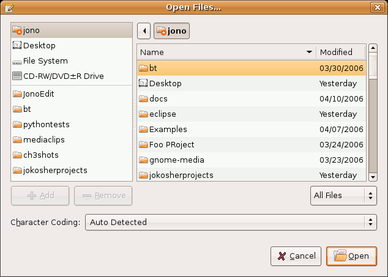
{kind=link}
Figure 3-37
The file chooser has a number of subtle features such as bookmarks.
The listing of files on the right hand side is used to find the file you need, and you can click on folders in this listing to traverse deeper into your subfolders. Note how each folder is displayed above the listing in a series of buttons. You can click these buttons to easily jump back to parent folders when needed.
Aside from manually picking files, the chooser also supports bookmarks. On the left side of the chooser there is a list of devices and bookmarks. These include Home (your home directory), Desktop (the files on your desktop), Filesystem (the entire hard drive), as well as devices such as CD drives, Floppy drives, and USB sticks.
To create your own bookmark, use the listing on the right to find the folder that you want to bookmark, single-click it, and then click Add below the bookmarks box. The folder now appears in the bookmarks. Now whenever you need to access that folder, just click the bookmark! In addition to putting the bookmark in the file chooser, it is also available in other parts of the desktop such as the Places menu and in the file manager.
Ubuntu in Your Language
When you installed Ubuntu, you were asked which language the system should use. Although this sets the initial language for the system, you may want to change the language at a later date. To do this click System > Administration > Language Selector.Ubuntu supports a huge range of different languages, and many applications include a Translate This Application menu option in the Help menu so that normal Ubuntu users can contribute translations in their language. If you would like help with this effort, it is a fantastic contribution to the Ubuntu project.
When the language selector first loads, it may ask you to update your Language Packs. Just click Yes to continue. Inside the dialog box a number of languages are listed, each of which has Translations and Writing Aids checkboxes. For each language that you want available on the system, check the relevant boxes. The Translations box should be checked for menus, labels and buttons to be translated, and the Writing Aids box should be checked to install dictionaries and grammar checkers.
When you have selected the boxes, click the Apply button, and the appropriate language packs are downloaded and installed. Now use the Default Language combo box to choose the new language. You need to log out and log back in for the changes to take effect.
Choosing a New Language
When you see the login screen, you can use the Language button to
choose a language for that specific login session. When you select the
language you are asked if you want to make it the default language or
use it just for that specific session.
Customizing Ubuntu's Look and Feel
Whenever I have put someone in front of Ubuntu for the first time, there seems a uniform natural desire to tweak the look and feel of the desktop. In our increasingly diverse society, everyone is different, and everyone's tastes are equally individual and unique. It can be fun tweaking our desktops so they look just right, and Ubuntu has great support for all kinds of adjustments to your desktop. Do you want different looking applications with a lime green background and crazy fonts? No problem, just don't show it to anyone else...Changing the Background
To change the background of your desktop right-click it and select Change Desktop Background. Inside the dialog box that appears, choose your wallpaper by clicking on an image and the desktop background will automatically change. Ubuntu comes with a limited range of preinstalled wallpapers, so it is likely that you will want to add your own wallpaper. To do this, save your wallpaper somewhere on your computer, and then use the Add Wallpaper button to select it. The new wallpaper can be selected from the list.If you are not really a wallpaper kind of person and would prefer just a color for the background, you can use the Desktop Colors controls at the bottom of the dialog box. The combo box provides three different types of background: Solid Color, Horizontal Gradient, and Vertical Gradient. Next to the combo box you click on the color chip to select the relevant color(s).
Changing the Theme
When you are using your applications, the visual appearance of the buttons, scroll bars, widgets, and other bits and pieces are controlled by the Theme. The built-in theming system can make your applications look radically different, and Ubuntu ships a number of themes with it that you can try.Choosing a New Theme
To choose a new theme click System > Preferences > Theme. Inside the dialog box that pops up are a number of themes that you can choose. Just click on a theme and the desktop will be adjusted automatically. You can further customize your theme by clicking the Theme Details button. A new dialog box appears that has tabs for the different parts of the theme you can configure. Click each tab and select an entry from the list to create your own perfect theme.Installing New Themes
To install a new theme first head over to http://art.gnome.org/, and find a theme that you like. You need to look for Application Themes when browsing the site. When you find a theme that you like, download it to your computer. Now Click System > Preferences > Themes and click the Install Theme button. Using the file chooser, find the theme that you just downloaded and it will install automatically. Now select your new theme from the list.Configuring a Screensaver
To choose a different screensaver click System > Preferences > Screensaver. The screensaver configuration tool then loads (Figure 3-38).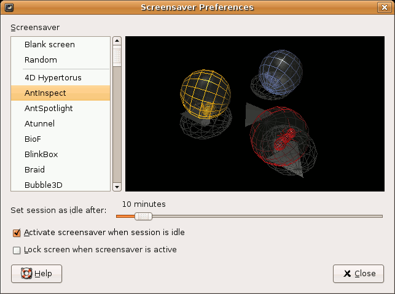
{kind=link}
Figure 3-38
A number of screensavers are bundled with Ubuntu
On the left side of the window is a list of available screensavers. Click on a screensaver and you will see a preview appear in the space to the right of the list. You can then use the slider to select how long the computer needs to be idle for before the screensaver kicks in.
The Lock Screen When Screensaver Is Active checkbox can be selected to lock the screen when the screensaver starts, and, as such, require the user to enter their password to reactivate the desktop. This is useful if you work in an office and want to ensure that no one tampers with your computer when you are away.
Managing Your Files
Files are the meat and potatoes of any computer, and they need to be managed, copied, moved, renamed, grouped, and loaded. Included with Ubuntu is a powerful yet simple file manager called Nautilus that integrates tightly into your desktop.Nautilus makes extensive use of drag and drop. Unlike the kind of file manager used in Windows with its tree view and listing of files, Nautilus displays files in a series of windows in which you can drag files around easily. For those who just can't say goodbye to the tree view, Nautilus also supports that. Aside from providing a simpler user interface, Nautilus also includes a number of useful features such as video and image previews, emblems, bookmarks, permissions management, and more.
How Linux Stores and Organizes Files
Before we use Nautilus it would be worthwhile to have a crash course in how files and folders are organized on a Linux system. If you have not used Linux before, this is likely to be new to you as the layout it is quite different from Windows and Mac OS X.Folder and Directories
When reading about file management, don't get confused by the terms
"folders" and "directories"-both words describe the same thing.
In the Windows world each disk drive is labeled with an identifying letter such as C: for your hard disk and A: for the floppy drive. In the Linux world, however, everything is part of the same file system organization. As such, if you have two or three hard disks, a CD drive, and USB stick all plugged in, they will all be part of the same folder structure.
The diagram shown in Figure 3-39 should give you an idea of how everything hangs together.

Figure 3-39
Linux file system organization
Right at the top of the tree is the root folder, referred to as /. Inside this folder there are a number of special system folders, each with a specific use. As an example, the /home folder contains a number of home directories for each user on the system. As such, the jono user account has the home folder set to /home/jono.
Which Folder Does What?
The folder structure in a modern Linux distribution such as Ubuntu was largely inspired by the original UNIX foundations that were created by men with large beards and sensible jumpers. Although you don't really need to know what these folders do, since Ubuntu looks after the housekeeping for you, some of you may be interested in the more important folders. For your pleasure, we present the Linux folder hit list in Table 3-1.Table 3-1
Linux folders
| FOLDER | USE |
| /boot | Contains important files to boot the computer including the bootloader configuration and the kernel. |
| /dev | Each device on your system (such as sound cards, Webcams etc) has an entry in this folder. Each application accesses the device by using the relevant items inside /dev. |
| /etc | Systemwide configuration files for the software installed on your system are stored here. |
| /home | Each user account on the system has a home directory, and they are stored here. |
| /lib | Important system software libraries are stored here. You should never need to delve into this world of the unknown. |
| /media | Media devices such as CD drives and USB sticks are referenced here when they are plugged in. More on this later. |
| /mnt | Other devices can be mounted later. Again, more on this later. |
| /opt | Optional software can be installed here. This folder is usually used when you want to build you own software. If you don't build your own software, you ignore this folder. |
| /proc /sys |
Information about current running status of the system is stored here. |
| /root | This is the home directory for the main superuser. |
| /sbin | Software that should only be run by the superuser is stored here. |
| /usr | General software is installed here. |
| /var | This folder contains log files about the software on your computer. |
Configuration Files
In the above table, /etc is described as storing systemwide configuration files for your computer. Aside from these files that affect everyone, there are also configuration files for each specific user. Earlier, when you customized Ubuntu's look and feel, the settings were only applied to your current user account. So where are those settings stored?Inside your home directory there are a number of folders that begin with a dot (.) such as .gnome2 and .openoffice2. These folders contain the configuration settings for specific applications for that specific user. By default these dot folders are hidden in Nautilus as you rarely need to access them. For future reference you can view these hidden files and folders by clicking View > Show Hidden Files.
You can start Nautilus from a number of different places such as Applications > Accessories > File Browser or more commonly by clicking Places > Home Folder to load your home folder. When the folder loads, you should see something similar to what is shown in Figure 3-40.
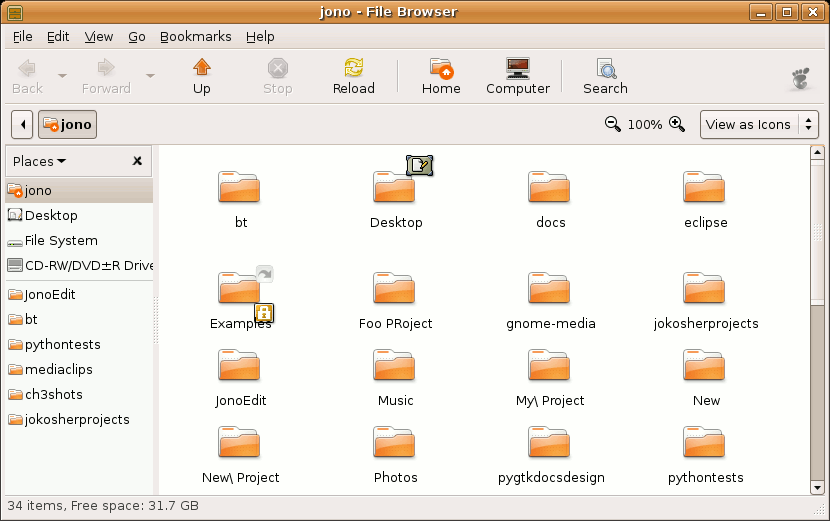
{kind=link}
Figure 3-40
Accessing your home folder files is as simple as clicking Places > Home Folder.
The Nautilus window is split into two different parts. The sidebar shows categories of information such as bookmarks, folders, emblems (more on these later), and more. In the main part of the window you can see the subfolders and files in the current folder. By default, Nautilus displays your bookmarks in the left sidebar and displays the contents of your home folder.
So, let's have a play with Nautilus and what you can do with it. The first important skills to learn are general file management. Many of the tasks you need to do can be achieved by right-clicking your file/folder and selecting the relevant option. There are also a number of options in the Edit menu.
First create a folder. Do this by right-clicking the main part of the window and selecting Create Folder. A folder is added, and you can type in the name of it. If you change your mind about the name, rename it by right-clicking, and selecting Rename. If you double-click on a folder, you can access it and perform the same operations in that subfolder.
Nautilus is also flexible in how your files are displayed. You can view the files and folders as either the default collection of icons or as a list. To switch to the list view, select View > View As List. You can also configure the organization of how your files and folders are displayed by right-clicking the main part of the window and select one of the options in the Arrange Items menu. Play with each of these options to see which ones work best for you.
Quick Tip
Just like in the file
dialog, Nautilus displays each of the different
parts of the path as different buttons. As an example, /home/jono/work
would have three buttons: home, jono, and work.
Selecting, Copying, and Moving Files/Folders
Copying and moving files and folders are simple with Nautilus and can be done in a number of different ways. To test this, create two folders in your home directory called Work and Invoices. Save some files inside each folder. You can quickly create empty files by double-clicking the folder to go into it, right-clicking, selecting Create Document > Empty File, and renaming the file to something useful. With a couple of folders now complete with files in them, let's move them around.One method is to use two windows. Right-click the Work folder, and select Open in New Window. You now have two windows open, one with the contents of Work and one with the contents of your home directory. Now copy the Invoices folder to the Work folder by clicking it and dragging it over to the second window (which shows the contents of Work). By default, dragging from one window to another copies the item.
Another option is to select what you want to copy and paste it. Selecting items can again be done in a number of ways. One method is to click each file/folder while holding down the Shift or Ctrl keys to make multiple selections. The difference between the two keys is that Shift will allow you select a number of files/folders next to each other and Ctrl selects independent files and folders from anywhere in the folder listing view. When you have selected what should be copied, right-click and select Cut or Copy. Cut will copy the original files but remove them and Copy will just copy them while leaving the original files intact. Now go to the destination folder, right-click it, and select Paste. The files/folders are now added.
Using the Sidebar
The sidebar in Nautilus can be changed to a variety of different views that should cater to virtually all tastes. Each of these different sidebar views has a range of different functions. Table 3-2 explains each one.Table 3-2
The different Nautilus sidebar options
| OPTION | FEATURE |
| Places | This is the default view, and includes the devices and bookmarks in the sidebar that you typically see in the file chooser. |
| Information | Displays some limited information about the current folder. |
| Tree | Displays a tree view similar to Windows/Mac OS X. Those of you who love the way Windows/Mac OS X works may want to use this. |
| History | Displays a history of the folders that you have clicked on. |
| Notes | This useful little feature allows you to write notes in the sidebar that are stored in the folder. This is handy when you need to explain or make comments about the current folder. |
| Emblems | List the files and folders that have specific emblems attached. Emblems are discussed in the next section. |
Although you will no doubt stick with one in particular, it is not uncommon to switch between options to achieve a particular task. For this reason, the flexibility provided by the range of sidebar options is useful.
Drag and Drop
If you want to put something in the Places view, drag and drop the
item. The Ubuntu Desktop is filled with drag and drop shortcuts like
this. If you think something could be dragged and dropped, try
it!
Using Emblems
Emblems give you the ability to tag files and folders to indicate something. These small graphical icons are used to say that the file/folder falls into a particular category, visually signified by the emblem. As an example, you may want to tag a file to indicate it is a draft.When you select the Emblems sidebar, a range of different emblems appears. To apply an emblem to a file/folder, just drag the emblem onto it. You can drag multiple emblems onto the files to indicate multiple things.
Ubuntu and Multimedia
In recent years, multimedia has become an essential part of computing. Watching DVDs and videos and listening to CDs and music have become part and parcel of the modern desktop computer experience. These multimedia capabilities have been further bolstered by the huge popularity of legal music downloading. With a range of online shops for a variety of different types of music, it is not uncommon to listen to the majority of your music without ever seeing a little shiny silver disc.Installing Codecs
Multimedia files and discs come in a variety of different types, and each type uses a special codec to compress the content to a smaller size while retaining a particular level of quality. To play this media, you need to ensure that you have the relevant codecs installed.Unfortunately, codecs have traditionally been something of a problem with Open Source software due to the legal restrictions placed upon them. The problem is that many codecs (including MP3, Windows Media Format, QuickTime, and Realmedia) are proprietary and have restrictions placed on their use, distribution, and licensing.
Although developers in the Open Source community have gone away and created free implementations of these codecs, the licensing that surrounds them conflicts with the legal and philosophical position that Ubuntu has set. Not only are these codecs not included because they are legally iffy, but because they disagree with Ubuntu's ethic of creating a distribution that is entirely comprised of free software in the freest sense of the word.
Quick Tip
If you want to find out more about installing these codecs, see
https://wiki.ubuntu.com/RestrictedFormats.
To work toward resolving these problems, a number of developers are working on free codecs such as Ogg Vorbis and Ogg Theora that provide high quality results and open licensing. The Ogg Vorbis codec is used on audio and can provide better results than MP3 at a smaller file size. The Ogg Theora codec is used for video and competes with the MPEG-4 codec. Ubuntu includes the Ogg Vorbis and Ogg Theora codecs, and you can encode and play back any media that uses those codecs.
Although the world would be a better place if all codecs were free, the reality is different and many Ubuntu users still want to play their media on their new desktop. Table 3-3 shows the most typical codecs used to encode and play back media, and lists their support in Ubuntu.
Table 3-3
Codec support
| CODEC | FILE TYPE | INCLUDED | SUPPORTED |
| MP3 | .mp3 | No | Yes |
| Ogg | .ogg | Yes | N/A |
| Windows Media Audio | .wma | No | Yes* |
| Wave | .wav | Yes | N/A |
| MPEG-1 | .mpg | No | Yes |
| MPEG-2 | .mpg | No | Yes |
| Raw DV | .dv | Yes | N/A |
| Quicktime | .mov | No | Yes* |
| Windows Media Video | .wmv | No | Yes* |
| Realmedia | .rm | No | Yes* |
*These codecs involve the installation of nonfree software that may or may not be legal in your country.
Listening to Audio Files
Ubuntu includes a powerful music player called Rhythmbox to organize and play your music file collection. Before you fire up Rhythmbox though, you need to create a folder to store your music files in. This folder can be anywhere, but putting it on the desktop makes sense, since it will then be easily accessible when you want to add new songs to it.Right-click your desktop, and select Create Folder. A new folder is created, and you should enter a name for it. Call it "Music" for now. Within this directory, organize your music in a way that makes sense to you. A good system that many people use is to first give each artist/band a folder and then inside each folder have a subfolder for each album that contains the songs. So, as an example, inside the Music folder you would have an Overkill folder inside of which there would be a Horrorscope folder that contains the individual songs. You don't need to use this system if you don't want to, but as your music collection builds it makes sense to organize it this way. Many CD rippers also store songs in this way, so you should not need to reconfigure your CD ripper later.
Quick Tip
Why not add your new music folder as a bookmark so it appears in the
file chooser, Places menu, and elsewhere?
Using Rhythmbox
Load Rhythmbox (See Figure 3-41) by clicking on Applications > Sound & Video > Rhythmbox Music Player. When Rhythmbox first starts it asks you to select the directory where your music is stored, so select your Music folder. To import your music, right-click the Library entry in the left panel and select Import Folder. Your songs are added to your music collection.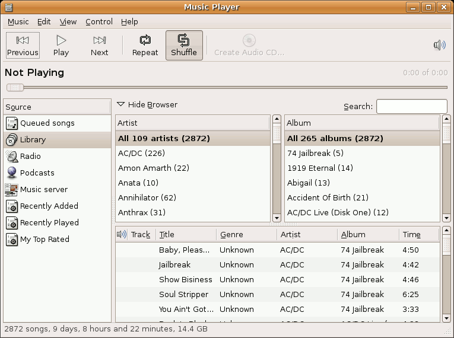
{kind=link}
Figure 3-41
Rhythmbox is a great place to look after your music collection.
The Rhythmbox window is split into a number of different panes, each displaying different details about your music collection. The left pane (Source) lets you select the source of the music such as your media library, podcasts and Internet radio. Each of these options has a browser pane available to display the source of the content. As an example, when you use the Library, a pane displaying the artists and one displaying the albums are displayed. You can use this to navigate your music.
Listening to Podcasts
Podcasts are audio shows that you can subscribe to, and they are increasingly becoming the new way to listen to audio and music. When you subscribe to a podcast, each new release is automatically downloaded for you. This makes it extremely convenient to regularly listen to audio shows.If you are new to podcasting you should go and grab yourself a podcast feed of something you like. A site such as www.podcast.net is a good place to start. Go to the site in Firefox, and when you see a link saying podcast feed or RSS feed, right-click it, and select Copy Link Location.
Rhythmbox has good support for Podcast feeds and subscribing to a feed is simple. In the sidebar, right-click the Podcast entry and click New Podcast Feed. Paste in the feed by right-clicking the box and selecting Paste. The files are automatically downloaded and you can listen to them by double-clicking on them. Each time you start Rhythmbox a check is made to see if any new episodes exist, and if so, they are downloaded.
Rhythmbox and iPods
Rhythmbox can also read songs from your iPod-just plug it in and it
will display in Rhythmbox. Unfortunately Rhythmbox can only
read from the iPod at the moment and not write to it.
Playing and Ripping CDs
When you pop a CD into your CD drive, an application called Sound Juicer automatically loads to play your CD. If you are connected to the Internet, the CD is looked up on the Internet, and the album details and song titles are displayed.Ripping Songs as Oggs
Sound Juicer is not just a CD player, but a ripper too. Using a ripper you can convert the songs on the CD into files that you can play on your computer. By default, Sound Juicer rips the files in the Ogg format, which provides better sound quality than MP3 at a smaller size. Before you rip the CD, click Edit > Preferences, and use the Music Folder combo box to select the Music folder that you created earlier to store your music files. If you have not set this folder to be a bookmark, you will need to click the combo box and then click Other to bring up the file chooser. By default the ripped files are stored in the format discussed earlier with each artist as a folder and then albums as subfolders.To rip the songs just select the checkboxes of the songs you want ripped (by default all songs are selected), and then click Extract. Each song is then stored in your Music folder, and the song titles are used as the names of the files.
Ripping Songs as MP3s
Although the default Ogg support is recommended in most situations, you may prefer to rip MP3 files if you have a digital audio player that does not support Ogg files. To do this you need to configure Sound Juicer to enable MP3 support.You should first install the gstreamer-10-ugly-multiverse package (from the Multiverse repository). Next, in Sound Juicer click Edit > Preferences and click the Edit Profiles button. In the dialog box that pops up, click New, call the profile MP3, and then select it from the list and click Edit.
Now fill in the settings with the following information:
Profile Description:
MP3
Encoder
GStreamer Pipeline: audio/x-raw-int,rate=44100,channels=2 ! lame name=enc
File Extension: mp3
GStreamer Pipeline: audio/x-raw-int,rate=44100,channels=2 ! lame name=enc
File Extension: mp3
Check the Active box, and click OK. Now close the Profiles dialog box, and click Close to close the Preferences box. Restart Sound Juicer, and you can now select MP3 from the Format combo box in the Preferences box.
A Word of Caution
Always, always remember that ripping CDs that are not yours is piracy.
It's not fair, so don't do it!
Watching Videos
To watch videos in Ubuntu you need to ensure that you have the correct codecs installed. As discussed earlier, some of these codecs are available separately due to the legal implications of including them with the Ubuntu system. Refer to the Ubuntu Wiki at http://wiki.ubuntu.com/ for details of how to install them.Using Totem
To watch videos in Ubuntu, you use the Totem media player (See Figure 3-42). Load it by clicking Applications > Sound & Video > Totem Media Player.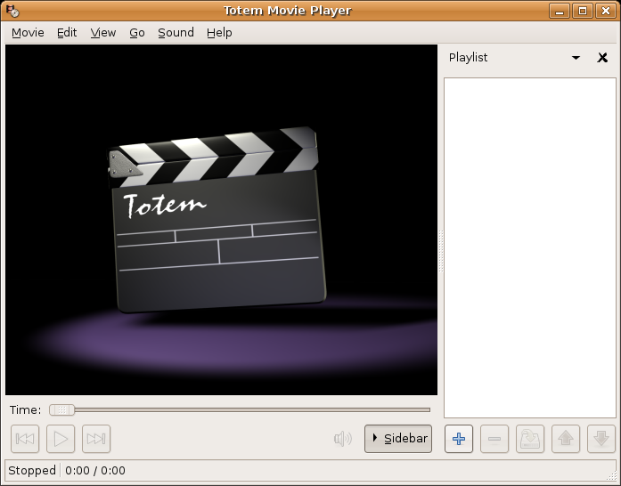
{kind=link}
Figure 3-42
Totem is a simple and flexible media player.
To watch a video on your hard disk, click Movie > Open and select the file from the disk.
Another Way to Load Files into Totem
You can also load multimedia files into Totem by double-clicking them
on your desktop or in the file manager.
Totem also supports video streams. To watch a stream, click Movie > Open Location, and enter the Internet address for the stream. The video feed is then loaded and displayed.
Getting DVDs to Work
Ubuntu comes with DVD support for unencrypted DVDs. With the DVD industry being what it is, the majority of DVDs come encrypted, and if you want to watch them you need to ensure that a library that can decrypt these DVDs is installed. Unfortunately this library needs to be installed separately and is not included with Ubuntu. Refer to the Ubuntu wiki restricted formats page at https://wiki.ubuntu.com/RestrictedFormats for details.With the library installed, insert a disc into your computer, and Ubuntu will automatically start Totem to view the disc. Alternatively, fire up Totem, and click Movie > Play Disc to play the DVD. Totem fully supports DVD menus and you can use the mouse to select the different menu options.
If you are settling down to watch a movie, there a few other settings you may want to configure. First click View > Aspect Ratio to select the correct aspect ratio for your screen, and then select View > Fullscreen to switch to full screen mode. To exit full screen, just move your mouse, and some on screen controls will appear.
Control Totem with a Remote Control
Totem supports the Linux InfraRed Control (LIRC) library so you can use a remote control while watching your media.Summary
In this chapter you've learned how to start using the core features of your new desktop. The concepts you have learned here should allow you to perform most of the day-to-day tasks when using your computer and provide a base from which to explore the other applications that are installed on your system. This solid grounding in the desktop paves the way for you to meander through the rest of the book, learning about the more advanced uses of your new system and exploring the enormous flexibility that Ubuntu provides.Always remember that there is a wealth of help and documentation available online. If you ever find yourself stuck, take a look at the Ubuntu Web site at www.ubuntu.com/ or the Ubuntu documentation at http://help.ubuntu.com/ and make use of the forums, wiki, mailing lists, and IRC channels.